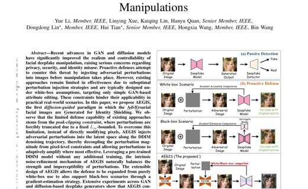
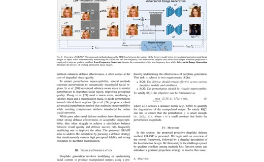
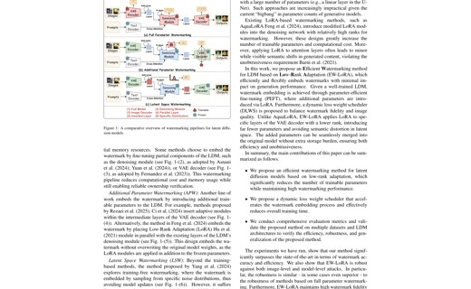
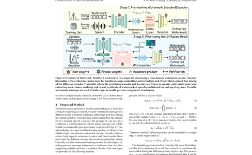
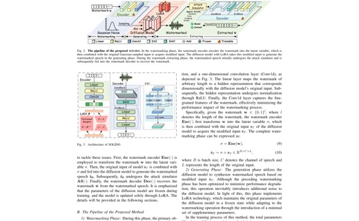
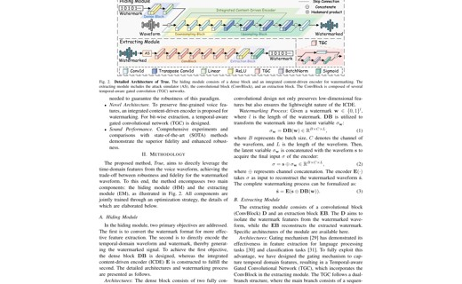
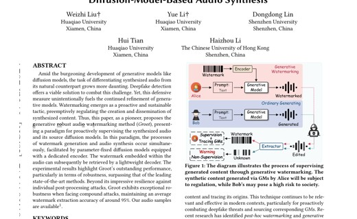
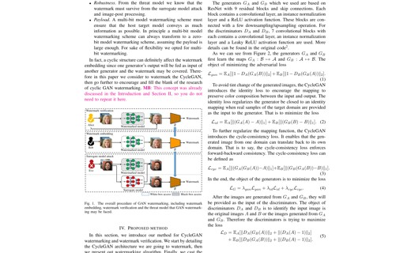

2025.04
🎉One paper is accepted to ICASSP 2025.
Dongdong Lin is currently a lecturer at Huaqiao University, working with Hui Tian. He received his B.Sc. and M.Sc. degrees from Xiangtan University, supervised by Chengqing Li, and completed his Ph.D. at Shenzhen University, supervised by Bin Li. From 2020 to 2022, he was a visiting student at the University of Siena, Italy, working with Mauro Barni and Benedetta Tondi.
His research focuses on AI security, deep model watermarking, deepfake detection, adversarial robustness, and multimedia forensics. Recent work spans watermarking for diffusion models, speech synthesis systems, and ownership verification of generative models.
He is currently interested in trustworthy AIGC, robust model ownership protection, and security problems around modern multimodal generative systems.
He serves as a CCF Professional Member, a CSIG Member, and an IEEE Member. He also serves as a reviewer for IEEE T-IFS/DSC/ASLP, SP, CVPR, ACM MM, and ICASSP.

@article{li2026diffusion,
title={Diffusion-Guided Adversarial Perturbation Injection for Generalizable Defense Against Facial Manipulations},
author={Li, Yue and Xue, Linying and Lin, Kaiqing and Quan, Hanyu and Lin, Dongdong and Tian, Hui and Wang, Hongxia and Wang, Bin},
journal={arXiv preprint arXiv:2604.01635},
year={2026}
}

@article{li2025towards,
title={Towards Imperceptible Adversarial Defense: A Gradient-Driven Shield against Facial Manipulations},
author={Li, Yue and Xue, Linying and Lin, Dongdong and Li, Qiushi and Tian, Hui and Wang, Hongxia},
journal={arXiv preprint arXiv:2510.01699},
year={2025}
}

@article{lin2024efficient,
title={An efficient watermarking method for latent diffusion models via low-rank adaptation},
author={Lin, Dongdong and Li, Yue and Tondi, Benedetta and Li, Bin and Barni, Mauro},
journal={arXiv preprint arXiv:2410.20202},
year={2024}
}

@article{li2025trinimark,
title={TriniMark: A Robust Generative Speech Watermarking Method for Trinity-Level Attribution},
author={Li, Yue and Liu, Weizhi and Lin, Dongdong},
journal={arXiv preprint arXiv:2504.20532},
year={2025}
}

@article{li2025solido,
title={SOLIDO: A Robust Watermarking Method for Speech Synthesis via Low-Rank Adaptation},
author={Li, Yue and Liu, Weizhi and Lin, Dongdong},
journal={arXiv preprint arXiv:2504.15035},
year={2025}
}

@article{li2025protecting,
title={Protecting Your Voice: Temporal-aware Robust Watermarking},
author={Li, Yue and Liu, Weizhi and Lin, Dongdong and Tian, Hui and Wang, Hongxia},
journal={arXiv preprint arXiv:2504.14832},
year={2025}
}
@inproceedings{10890107,
author={Lin, Dongdong and Li, Yue and Li, Bin and Huang, Jiwu},
booktitle={ICASSP 2025 - 2025 IEEE International Conference on Acoustics, Speech and Signal Processing (ICASSP)},
title={Exploiting Robust Model Watermarking Against the Model Fine-Tuning Attack via Flat Minima Aware Optimizers},
year={2025},
pages={1-5},
doi={10.1109/ICASSP49660.2025.10890107}
}

@inproceedings{10.1145/3664647.3680596,
author = {Liu, Weizhi and Li, Yue and Lin, Dongdong and Tian, Hui and Li, Haizhou},
title = {GROOT: Generating Robust Watermark for Diffusion-Model-Based Audio Synthesis},
year = {2024},
doi = {10.1145/3664647.3680596},
booktitle = {Proceedings of the 32nd ACM International Conference on Multimedia},
pages = {3294-3302},
numpages = {9}
}

@article{10591362,
author={Lin, Dongdong and Tondi, Benedetta and Li, Bin and Barni, Mauro},
journal={IEEE Transactions on Dependable and Secure Computing},
title={A CycleGAN Watermarking Method for Ownership Verification},
year={2025},
volume={22},
number={2},
pages={1040-1054},
doi={10.1109/TDSC.2024.3424900}
}
@article{CHEN2023109179,
title = {Watching the BiG artifacts: Exposing DeepFake videos via Bi-granularity artifacts},
journal = {Pattern Recognition},
volume = {135},
pages = {109179},
year = {2023},
doi = {https://doi.org/10.1016/j.patcog.2022.109179},
author = {Han Chen and Yuezun Li and Dongdong Lin and Bin Li and Junqiang Wu}
}
@inproceedings{10007959,
author={Lin, Dongdong and Tondi, Benedetta and Li, Bin and Barni, Mauro},
booktitle={2022 IEEE International Joint Conference on Biometrics (IJCB)},
title={Exploiting temporal information to prevent the transferability of adversarial examples against deep fake detectors},
year={2022},
pages={1-8},
doi={10.1109/IJCB54206.2022.10007959}
}
@article{8495009,
author={Li, Chengqing and Lin, Dongdong and Lu, Jinhu and Hao, Feng},
journal={IEEE MultiMedia},
title={Cryptanalyzing an Image Encryption Algorithm Based on Autoblocking and Electrocardiography},
year={2018},
volume={25},
number={4},
pages={46-56},
doi={10.1109/MMUL.2018.2873472}
}
@article{7999153,
author={Li, Chengqing and Lin, Dongdong and Lu, Jinhu},
journal={IEEE MultiMedia},
title={Cryptanalyzing an Image-Scrambling Encryption Algorithm of Pixel Bits},
year={2017},
volume={24},
number={3},
pages={64-71},
doi={10.1109/MMUL.2017.3051512}
}